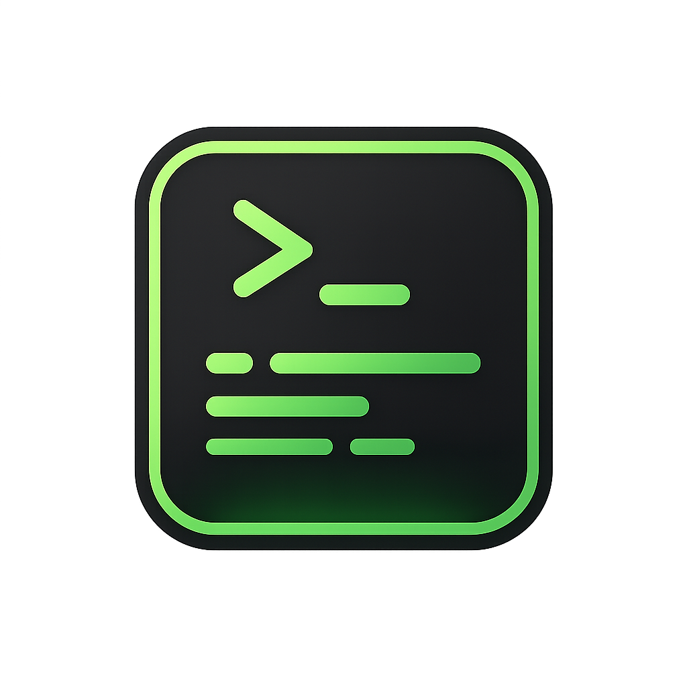

Datos y mantenimiento
Administra respaldos y limpieza global de proyectos.

FluxDevGuarda nombre, ruta, varios comandos e icono para ejecutar mas rapido.
Abre una sesion para trabajar dentro de la carpeta de un proyecto.
Administra respaldos y limpieza global de proyectos.